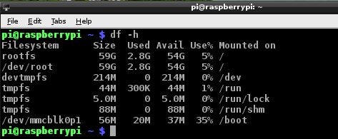
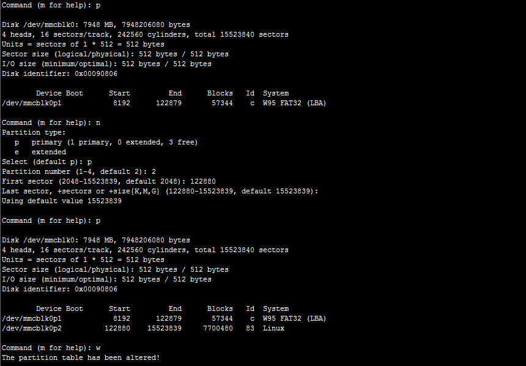
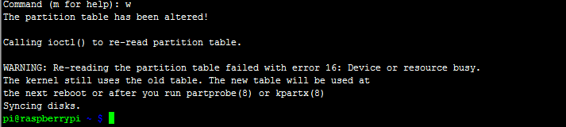
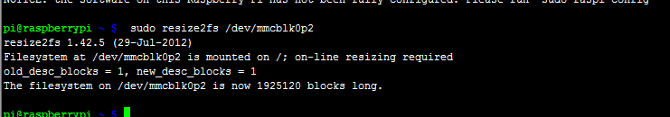

1.树莓派启动说明
树莓派必须依靠SD卡启动，也可以使用SD卡作启动盘，但必须使用SD卡
2.树莓派系统安装
2.1 SD卡安装系统
准备一张4G及以上的SD卡，为了提高系统运行速度，建议使用Class4的SD卡
准备一个读卡器，方便将系统写入SD卡
下载系统，我这里使用的是2014-07-18-wheezy-raspbian.img获取提取码
下载系统写入工具Win32DiskImager.exe获取提取码
在系统制作完成后，在win上看到SD卡容量为56M左右，因为win无法查看UNIX系统的分区，而在启动树莓派之后，可以看到SD卡存储也只有2.7G左右，几乎没有什么内存了，这是应为还有位分配的容量，SD卡分区
SD卡分区
查看分区详情

此处为分区处理后的结果
下面开始分区(注:执行这些命令时，最好备份数据，以免重要数据丢失)
sudo fdisk /dev/mmcblk0
按P
将看到的/dev/mmcblkop2的start值122880记下来，下面将会用到
执行命令:d（删除分区2，选择2）
执行命令:p（少了 一个分区）
执行命令:n（加分去）
执行命令:p（主分区）
选择2
在开始位置输入start值122880，后面的默认即可
执行命令:p
执行命令:w

成功后如下:

重启树莓派:
sudo reboot
重新登录成功后执行下列命令:
sudo resize2fs /dev/mmcblk0p2
用于修复分区

*** 参考文献